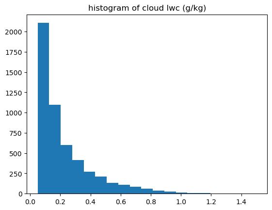
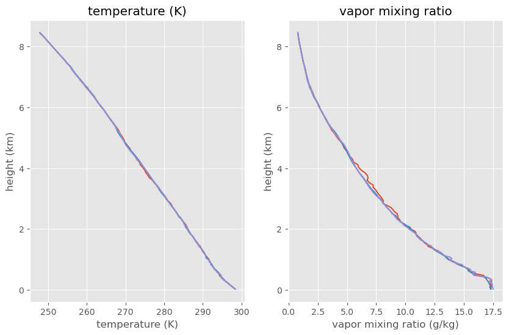
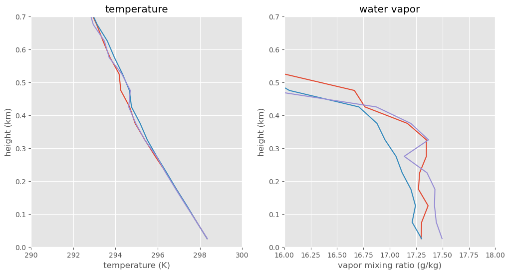
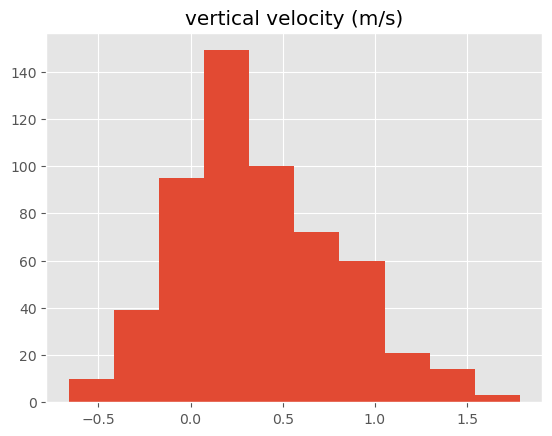
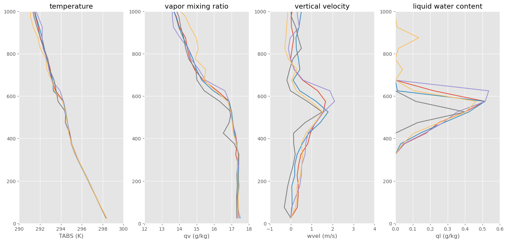
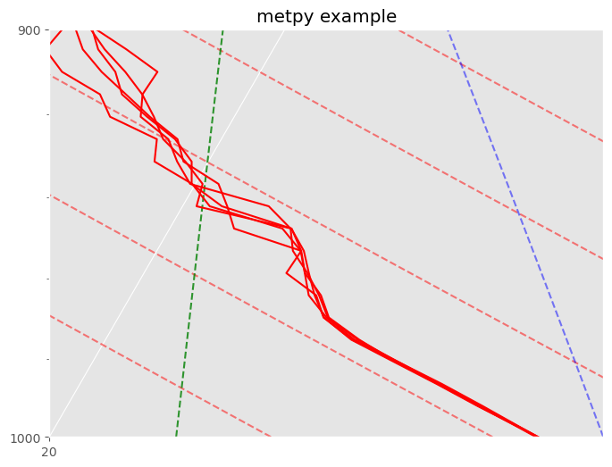
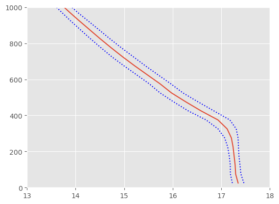
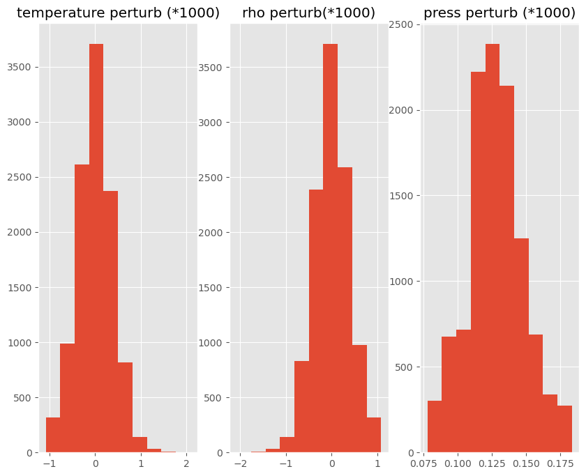

Assignment 3 solution: Analyzing a model cloud dataset#
This notebook shows how to locate clouds in the tropical_subset.nc netcdf file and plot their temperature and liquid water profiles.
Due: Friday Jan. 30 at 11:59pm
Reading the file#
Download the file tropical_subset.nc and save it to the folder where this notebook is located.
from pathlib import Path
import xarray as xr
import numpy as np
from matplotlib import pyplot as plt
#
# need to see the file in the current folder
#
the_file = Path() / "tropical_subset.nc"
print(f"opening {the_file.resolve()}")
the_ds = xr.open_dataset(the_file)
opening /Users/phil/repos/a405/assignments/tropical_subset.nc
Analyze the data#
Get the file structure using ncdump#
!ncdump -h tropical_subset.nc
netcdf tropical_subset {
dimensions:
x = 100 ;
y = 110 ;
z = UNLIMITED ; // (112 currently)
time = UNLIMITED ; // (1 currently)
variables:
float x(x) ;
string x:units = "m" ;
float y(y) ;
string y:units = "m" ;
float z(z) ;
string z:units = "m" ;
string z:long_name = "height" ;
float time(time) ;
string time:units = "d" ;
string time:long_name = "time" ;
float p(z) ;
string p:units = "mb" ;
string p:long_name = "pressure" ;
float U(time, z, y, x) ;
string U:long_name = "X Wind Component" ;
string U:units = "m/s" ;
float V(time, z, y, x) ;
string V:long_name = "Y Wind Component" ;
string V:units = "m/s" ;
float W(time, z, y, x) ;
string W:long_name = "Z Wind Component" ;
string W:units = "m/s" ;
float PP(time, z, y, x) ;
string PP:long_name = "Pressure Perturbation" ;
string PP:units = "Pa" ;
float TABS(time, z, y, x) ;
string TABS:long_name = "Absolute Temperature" ;
string TABS:units = "K" ;
float QV(time, z, y, x) ;
string QV:long_name = "Water Vapor" ;
string QV:units = "g/kg" ;
float QN(time, z, y, x) ;
string QN:long_name = "Non-precipitating Condensate (Water+Ice)" ;
string QN:units = "g/kg" ;
float QP(time, z, y, x) ;
string QP:long_name = "Precipitating Water (Rain+Snow)" ;
string QP:units = "g/kg" ;
}
Get the variable information directly from xarray#
print(the_ds)
print(f"\n{'*'*60}\n")
print(f"info for the PP variable\n\n{the_ds['PP']}\n")
<xarray.Dataset> Size: 39MB
Dimensions: (z: 112, time: 1, y: 110, x: 100)
Coordinates:
* z (z) float32 448B 25.0 75.0 125.0 ... 8.248e+03 8.348e+03 8.448e+03
* time (time) float32 4B 0.29
* y (y) float32 440B 4e+04 4.01e+04 4.02e+04 ... 5.08e+04 5.09e+04
* x (x) float32 400B 1e+04 1.01e+04 1.02e+04 ... 1.98e+04 1.99e+04
Data variables:
p (z) float32 448B ...
U (time, z, y, x) float32 5MB ...
V (time, z, y, x) float32 5MB ...
W (time, z, y, x) float32 5MB ...
PP (time, z, y, x) float32 5MB ...
TABS (time, z, y, x) float32 5MB ...
QV (time, z, y, x) float32 5MB ...
QN (time, z, y, x) float32 5MB ...
QP (time, z, y, x) float32 5MB ...
************************************************************
info for the PP variable
<xarray.DataArray 'PP' (time: 1, z: 112, y: 110, x: 100)> Size: 5MB
[1232000 values with dtype=float32]
Coordinates:
* time (time) float32 4B 0.29
* z (z) float32 448B 25.0 75.0 125.0 ... 8.248e+03 8.348e+03 8.448e+03
* y (y) float32 440B 4e+04 4.01e+04 4.02e+04 ... 5.08e+04 5.09e+04
* x (x) float32 400B 1e+04 1.01e+04 1.02e+04 ... 1.98e+04 1.99e+04
Attributes:
long_name: Pressure Perturbation
units: Pa
remove the time dimension (only one timestep) using squeeze#
Since we only have one timestep, squeeze the 4 dimensional (t,x,y,z) arrays into 3 dimensions x,y,z
print(f"{the_ds['TABS'].shape=}")
the_temp = the_ds['TABS'][...].squeeze()
the_height=the_ds['z'][...].squeeze()
xvals=the_ds['x'][...].squeeze()
yvals=the_ds['y'][...].squeeze()
print(f"{the_height.shape=}")
the_press=the_ds['p'][...].squeeze()
the_press=the_press*100. #convert to Pa
wvel=the_ds['W'][...].squeeze() #m/s
qv=the_ds['QV'][...].squeeze() #vapor g/kg
ql=the_ds['QN'][...].squeeze() #liquid g/kg
print(f"{ql.shape=}")
the_ds['TABS'].shape=(1, 112, 110, 100)
the_height.shape=(112,)
ql.shape=(112, 110, 100)
How much liquid water is in the domain?#
bins=np.linspace(0.05,1.5,20)
out=plt.hist(ql.data.flat,bins=bins)
plt.title('histogram of cloud lwc (g/kg)');

Temperature and vapor mixing ratio profiles#
Pick three arbitrary (x,y) coordinates and plot the soundings
plt.style.use('ggplot')
meter2km=1.e-3
g2kg = 1.e-3
#
# three random columns
#
random_xy=[(10,20),(80,40),(25,75)]
fig,ax=plt.subplots(1,2,figsize=(10,6))
for x,y in random_xy:
temp_profile=the_temp[:,y, x]
qv_profile=qv[:,y, x]
out=ax[0].plot(temp_profile,the_height*meter2km)
out=ax[1].plot(qv_profile,the_height*meter2km)
out=ax[0].set(xlabel='temperature (K)',ylabel='height (km)',title='temperature (K)')
out=ax[1].set(xlabel='vapor mixing ratio (g/kg)',ylabel='height (km)',title='vapor mixing ratio')

zoom in on bottom 1 km#
Note the change in the temperature and water vapor profiles near the surface – this is atmospheric boundary layer
#
# plot 3 arbitrary columns to compare
#
from matplotlib import pyplot as plt
meter2km=1.e-3
lv=2.5e6
g=9.8
cpd=1004.
random_xy=[(10,20),(80,40),(25,75)]
fig,ax=plt.subplots(1,2,figsize=(12,6))
for x,y in random_xy:
temp_profile=the_temp[:,y, x]
qv_profile=qv[:,y, x]
hm_profile = cpd*temp_profile + lv*qv_profile*g2kg + g*the_height
out=ax[0].plot(temp_profile,the_height*meter2km)
out=ax[1].plot(qv_profile,the_height*meter2km)
out=ax[0].set(xlabel='temperature (K)',ylabel='height (km)',title='temperature')
ax[0].set(xlim=(290,300))
ax[1].set(xlim=(16,18))
out=ax[1].set(xlabel='vapor mixing ratio (g/kg)',ylabel='height (km)',title='water vapor')
for the_ax in ax:
the_ax.set(ylim=(0,0.7))

Find the active cloud gridcells at 500 meters#
Locate all grid cells near 500 meters with liquid water and find their vertical velocity. We want to look at the most bouyant gridcells.
Use searchsorted to find that the index closest to 500 meters is 10, which puts the height at 525 meters
Use ravel to flatten the x,y grid to one dimension
index_500 = np.searchsorted(the_height,500)
print(f"{index_500=}")
print(f"{the_height[index_500].data=}")
#
# select cells at 500 m with ql > 0
#
hit_cloud_cells_500 = (ql[index_500,:,:] > 0.).data.ravel()
wvel_cloud = wvel[index_500,:,:].data.ravel()
wvel_cloud = wvel_cloud[hit_cloud_cells_500]
plt.hist(wvel_cloud)
ax = plt.gca()
ax.set_title("vertical velocity (m/s)");
index_500=np.int64(10)
the_height[index_500].data=array(525., dtype=float32)

find the x,y coordinates of the strongest updrafts#
Locate all cloud cells with vertical velocity > 1.5 meters/second
out = np.where(np.logical_and(ql[index_500,:,:] > 0.,wvel[index_500,:,:]>1.5))
out
(array([41, 50, 55, 76, 93]), array([56, 84, 32, 56, 55]))
zip the y,x arrays together to get (y,x) pairs#
We have two separate vectors, out[0] (y values) and out[1] (xvalues)
Below I use the zip itterator to zipper them together, and the ‘*’ operator (see this article for list and keyword expansion.)
The problem with iterators is that you can only use them once – see this stack overflow answer Iterators are actually functions, not data structures. So I “drain the interator” by converting it into a list in case I might need to use it again.
updraft_list =list(zip(*out))
fig,ax=plt.subplots(1,4,figsize=(18,8))
for y,x in updraft_list:
ax[0].plot(the_temp[:,y,x],the_height)
ax[1].plot(qv[:,y,x],the_height)
ax[2].plot(wvel[:,y,x],the_height)
ax[3].plot(ql[:,y,x],the_height)
ax[0].set(xlim=(290,300),xlabel='TABS (K)',title='temperature')
ax[1].set(xlim=(12,18),xlabel='qv (g/kg)',title='vapor mixing ratio')
ax[2].set(xlim=(-1,4),xlabel='wvel (m/s)',title='vertical velocity')
ax[3].set(xlim=(0,.6),xlabel='ql (g/kg)',title='liquid water content')
out=[the_ax.set(ylim=(0,1000)) for the_ax in ax]

Assignment 3 problems#
1. SkewT diagram#
In the box below, plot the 5 strongest updrafts found above on a tephigram, zooming in on the bottom 1 km. Are the soundings dry adiabatic, moist adiabatic or somewhere in between?
1. Answer#
The sub-cloud layer is dry-adibatic for all profiles. The profiles all moist adiabatic in solid cloud, and then between dry and moist adiabatic above cloud top. Note that one of the clouds is much taller than the other 4.
# your code here
from a405.thermo.constants import constants as c
from metpy.plots import SkewT
from metpy.units import units
fig,ax =plt.subplots(1,1,figsize=(8,8))
fig.clf()
skew_plot = SkewT(fig)
skew_plot.ax.set_title("metpy example")
skew_plot.ax.set(xlim=(20,25),ylim=(1000,900))
theta = np.arange(0,60,2) + 273.15
theta = theta*units("K")
skew_plot.plot_dry_adiabats(t0=theta)
skew_plot.plot_moist_adiabats()
skew_plot.plot_mixing_lines()
for y,x in updraft_list:
temp = the_temp[:,y,x]
skew_plot.plot(the_press*0.01,temp - c.Tc,'r')

2. \(q_v\) variablity#
in the box below make a plots of the average \(q_v\) as a function of height for the bottom 1 km, and the standard deviation in \(q_v\) as a function of height
2. Answer#
\(q_v\) variability increases in the cloud layer
# 2. your code here
qvmean = qv.mean(dim=('y','x'))
qvstd = qv.var(dim=('y','x'))**0.5
fig, ax = plt.subplots()
ax.plot(qvmean,the_height)
ax.plot(qvmean - qvstd,the_height,'b:')
ax.plot(qvmean + qvstd,the_height,'b:')
ax.set_ylim(0,1000)
ax.set_xlim(13,18)
(13.0, 18.0)

3. Tallest cloud#
In the box below, write a function that finds the tallest cloud in the dataset. What is the maximum cloud top height? Does this seem reasonable?
def find_tallest(ql):
"""
given the liquid water xarray, start at the highest level and look
at the sum of all pixels at each level with ql>0, stopping at
first true value
Parameters
----------
ql: array of model liquid water content (g/kg)
type: xarray ('z','y','x')
Returns
-------
index, count_vec: tuple with index (int): highest level with at least one cloud pixel
count_vec: 1-d xarray with counts and height dimension
"""
hit = ql > 0.001
count_vec = hit.sum(dim=('y','x'))
zsize = count_vec.sizes['z']
index_list = np.arange(zsize-1,-1,-1)
index=0
for index in index_list:
count = count_vec[index].data
if count > 0:
break
return int(index),count_vec
first_cloud,count_vec = find_tallest(ql)
zlev = count_vec.z[first_cloud].data
print(f"highest cloud level is at {zlev=:.0f} m")
highest cloud level is at zlev=4288 m
4. Buoyancy vs. pressure perturbation#
Equation 12 of the buoyancy notes has three terms.
In the cell below, plot histograms of each of those terms at the 500 m height level. Can you confirm that the pressure perturbation term is small enough to be neglected at that level?
4. Answer#
The normalized pressure perturbation is about a factor of 10 lower than temperature or pressure pertubations. We can see from the histograms that they do look like the temperature perturbations are just the negative of the density perturbations.
# your code here
T_mean = the_temp[index_500,:,:].mean()
T_prime = the_temp[index_500,:,:] - T_mean
T_term = T_prime/T_mean
rho = the_press[index_500]/(c.Rd*the_temp[index_500,:,:])
rho_mean = rho[:,:].mean()
rho_prime = rho - rho.mean()
rho_term = rho_prime/rho_mean
p_prime = the_ds['PP'].squeeze()
p_prime = p_prime[index_500,:,:]
p_mean = the_press[index_500]
p_term = p_prime/p_mean
fig,(ax_temp,ax_rho,ax_press) = plt.subplots(1,3,figsize=(10,8))
ax_temp.hist(T_term.data.flatten()*1.e3)
ax_rho.hist(rho_term.data.flatten()*1.e3)
ax_press.hist(p_term.data.flatten()*1.e3)
ax_temp.set_title('temperature perturb (*1000)')
ax_rho.set_title('rho perturb(*1000)')
ax_press.set_title('press perturb (*1000)');
